The story bank · for people who weren't in the room
Thecase files.
Behind every clip in the archive there was a room, a clock, and a call somebody had to make. These are the stories that explain how I work: under breaking news, under legal scrutiny, ahead of the policy fight, inside the algorithm, and when a colleague's freedom was on the line.
December 2007. I was the overnight producer at WDRB Fox 41 in Louisville, owning two hours of a four-hour live morning block. Small-market station, small-market resources. Benazir Bhutto was assassinated during my window. I was hammering the incoming wires when the story broke, and I called it.
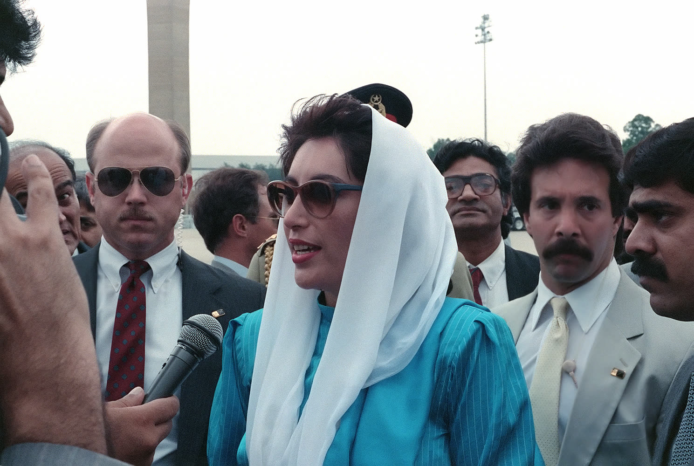
Benazir Bhutto, 1989 · public domain, US Dept. of Defense
Calling it meant restacking the entire two-hour block in real time: flipping from scheduled content to breaking news inside a tight window, driving the control room through the pivot, writing replacement copy during commercial breaks to keep up with a developing story. We reported Bhutto's death minutes before The Today Show did. From a local Fox affiliate in Kentucky.
Breaking news doesn't care what market you're in.
That morning became my template. High-stakes real-time decisions turned out not to be about infrastructure. The networks had every resource we didn't. Every rebuilt rundown since then, at Al Jazeera, Fusion, and AJ+, traces back to that shift.
Al Jazeera English · 2011
Launch night, rewritten by breaking news
The Stream was set to launch on May 2, 2011. A new kind of live program at Al Jazeera English, built to treat Twitter, Skype, SMS, and real-time trending data as first-class journalistic sources. The night before our first broadcast, Osama bin Laden was killed in Abbottabad, Pakistan. Every piece of content we'd prepared was suddenly worthless. We had roughly twelve hours to tear the launch show apart and rebuild it around a story nobody had planned for, on a program that had never aired.
The infrastructure held. Our team found Sohaib Athar, a software consultant in Abbottabad who'd unknowingly live-tweeted the raid from @ReallyVirtual to a few hundred followers. We had him on Skype by air time. As we broadcast to 250 million households, our digital producer graphed his follower count climbing live, from a few hundred to tens of thousands, on screen. The audience watched the internet decide someone mattered in the exact moment it happened. Nobody had a name for that kind of journalism yet.
We built the system to kill improvisation. On purpose.
The Royal Television Society gave The Stream its Innovative News Award for that first season's Bahrain coverage, the same season Al Jazeera English was named RTS News Channel of the Year. What I carry from that night is more specific. We'd treated the rundown as a hypothesis, permanently open to revision by incoming signal, so the worst-case launch looked structurally like any other show day. The inputs changed. The workflow did not.
In 2012 I produced a HuffPost Live panel on transgender military service. One guest was an anonymous active-duty Navy service member. No face, no surname, call sign Olivia. She joined at real risk of discharge for showing up. At the time it felt like a Tuesday: a booking came together, a rundown slot opened, we aired it. The Pentagon wouldn't let transgender people serve openly for another four years. We named the arguments before the policy fight had fully surfaced in mainstream coverage.
The panel around Olivia was a sourcing architecture, not a talking-head lineup. A trans Navy pilot. A Navy submarine veteran who founded the Transgender American Veterans Association. Counsel from the Servicemembers Legal Defense Network. A leader from OutServe.
The newsroom was already under multi-million-dollar legal scrutiny from its Scientology work, so every seat needed institutional standing and on-record credibility. When a broadcast is litigation-sensitive, the panel itself is part of the editorial defense.
The story had aged into primary source documentation.
The segment ran without retraction. In June 2016 the Pentagon reversed its policy, validating what the panel argued on air years earlier. In 2017, when the politics flipped again, the broadcast resurfaced as archival evidence during the trans military ban fight. The story had aged into primary source documentation.
The premise sounded like a celebrity item: Kim Kardashian opens a milkshake shop in Bahrain. But Bahrain in late 2012 was mid-uprising. Crowds peaked at roughly 200,000 in a country of about 600,000 citizens, one of the largest shares of a citizenry in the streets anywhere that year. The editorial question: cover the shop or the country? My answer was both, same segment.
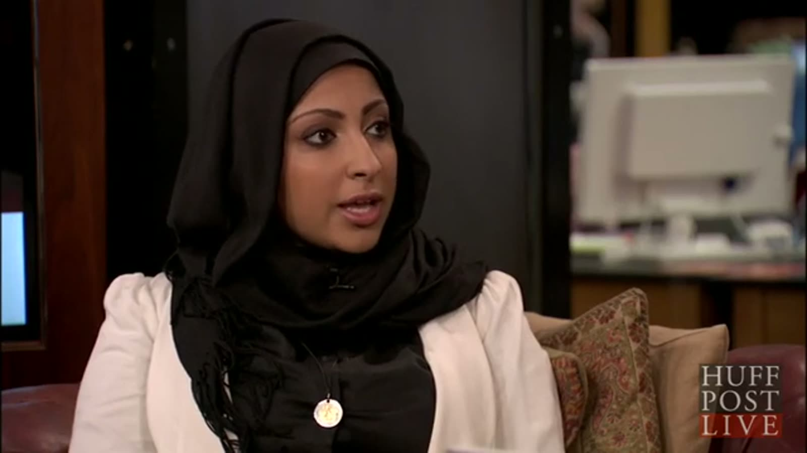
Maryam Al-Khawaja on the HuffPost Live set · from the broadcast, 2012
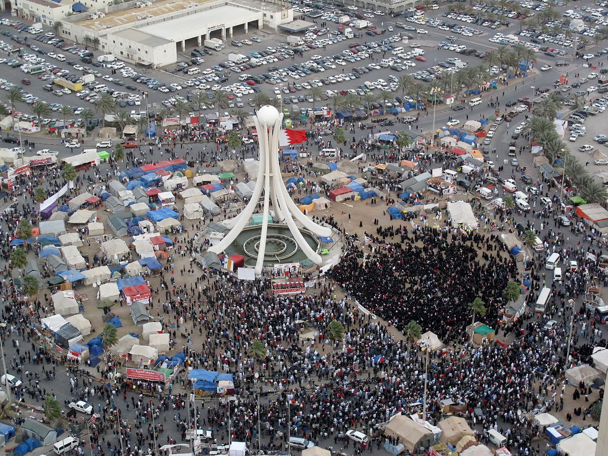
Pearl Roundabout, Manama, 2011 · CC BY-SA
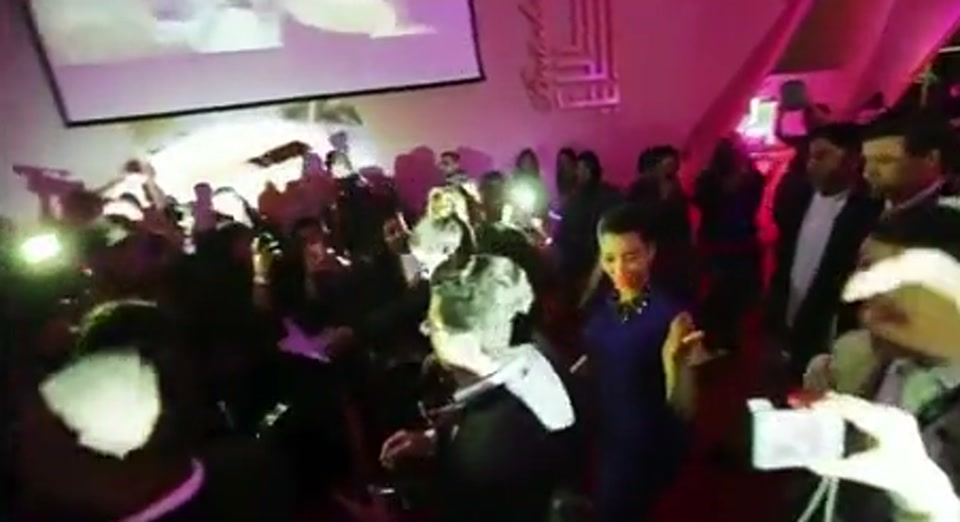
Kim Kardashian in the launch crowd at The Walk, Riffa · from the aired segment, 2012
We booked Maryam Al-Khawaja, acting president of the Bahrain Centre for Human Rights and named to Foreign Policy's 2012 Global Thinkers list, and cut Al Jazeera's documentary Shouting in the Dark live into the broadcast. We aired November 9 protest footage with Al-Khawaja narrating over it in real time, host Ahmed Shihab-Eldin steering. The store opening got its mention. The human rights situation it was obscuring got the airtime.
Celebrity news was the doorway. The uprising was the story.
I don't treat celebrity news and hard news as enemies. Attention is attention, and the producer's job is deciding where it lands. The segment used a doorway the audience had already walked through. An uprising's story reached viewers no straight news pitch would ever have found.
The FDA approved Truvada for HIV prevention in 2012, and then almost nobody talked about it. PrEP was clinically real but invisible in the communities it was built to serve. Roughly six months after approval, well ahead of mainstream coverage, I brought the story to HuffPost Live and produced a 29-minute live expert panel on it. Nobody assigned it. I argued it mattered, and then I built it.
We booked Robert Grant, chair of the IPREX clinical trial that proved the drug worked, live from Lima, Peru. The AIDS Healthcare Foundation's chief of public affairs took the opposing side, so the tension on air was real, not staged consensus. At the close, the host said it on tape: "Thank you to our wonderful producer, Mitchell Williams, who brought this to our attention." By 2014 the CDC was recommending PrEP for all high-risk individuals.
There's a difference between producing a segment and identifying why it matters, and this is the cleanest version of that distinction I've got. I found the story, made the case, booked genuine disagreement instead of a consensus panel, and put it in front of a live audience early.
In 2012 and 2013 I produced segments at HuffPost Live, a live streaming network covering the Church of Scientology: booking defectors, airing testimony, running criticism the organization considered actionable. I produced Jenna Miscavige Hill's on-record break with the church, the niece of its leader telling her story live. Scientology had a documented history of pursuing its critics with legal tools, and everyone in that newsroom knew it. Every segment decision, every on-screen caption, every source booking sat under the shadow of multi-million-dollar litigation. That wasn't background noise. It was the operating condition for the work.
The format made it harder. HuffPost Live ran on live audience engagement, viewer comments feeding straight into the broadcast. That loop was the platform's whole innovation, and on this coverage it was a liability. I had to build a parallel editorial filter inside it: fast enough for live pace, conservative enough to survive legal review. Defector testimony as personal account versus organizational fact. On-record sourcing versus implication. Every guest weighed for credibility and for exposure. All of it operational inside the broadcast window, invisible on air.
The coverage ran. HuffPost Live didn't retract, and there was no public blowback. The segments held because the risk analysis was baked into the workflow before the moment of decision, not reviewed after. That period is why I know I can hold two filters at once, editorial quality and institutional exposure, at live speed, without letting either collapse the other.
HuffPost Live · 2013
A full hour with Jazz, two years before TLC
On April 2, 2013, I produced a 58-minute live HuffPost Live episode built around Jazz, a transgender kid who'd become the star of TLC's I Am Jazz two years later. She was our anchor guest, alongside her mother. Host Alicia Menendez held a child-safe format across nearly an hour of live TV. That's its own production discipline: every question pre-considered, every escape hatch planned.
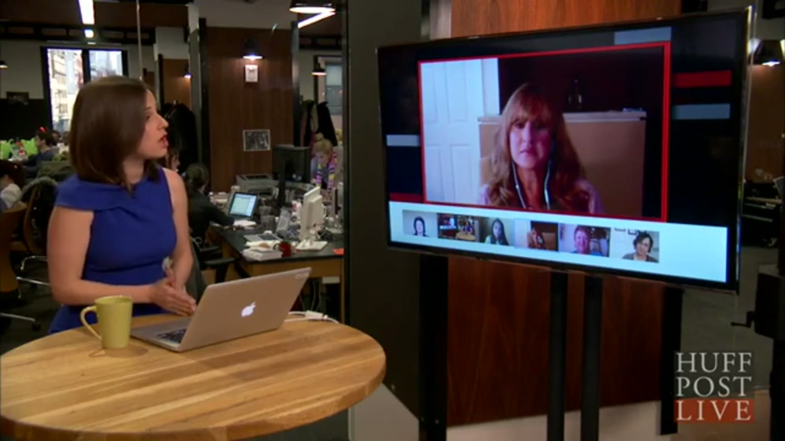
From the broadcast · HuffPost Live, 2013
Jazz Jennings, 2016 · Steven Pisano · CC BY
We also booked Dr. Maddie Deutsch of UCSF's Center for Excellence for Transgender Health, who disclosed her own trans identity on air. On air, the panel discussed attempted-suicide rates for transgender youth that guests put near 50 percent. Most outlets weren't having that conversation at all.
I Am Jazz got greenlit in 2015 and ran for more than seven seasons.
Find the story early. Then build the container so it can be told safely.
Two years before television decided this story was mainstream, we gave it a full hour. A format careful enough to protect a child, serious enough to carry clinical reality.
Rebuilding primetime in real time: the Mandela special
On December 5, 2013, I was producing Fusion's primetime flagship when Nelson Mandela died at 8:50 PM. The rundown had been built for a different night. We threw it out and rebuilt the broadcast from scratch, live, with anchor Mariana Atencio carrying it solo from our studio and ABC's Lindsay Janis co-anchoring from theirs. Fusion was a young ABC and Univision joint venture, and this was the night it had to perform like a legacy network.
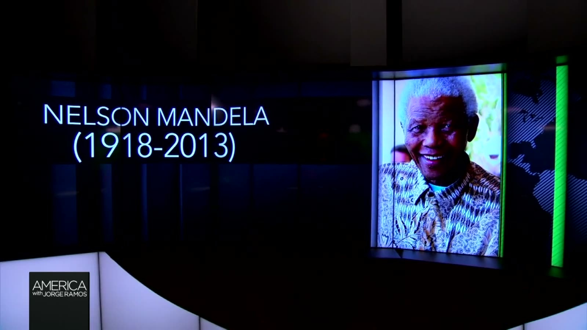
Mariana Atencio opening the special · from the broadcast, Dec 5, 2013
The 44 minutes that aired pulled together ABC News field packages from Karen Travers and Jim Avila, President Obama's statement in full, President Zuma's official South African government statement, four consecutive live phone experts, a real-time Twitter reaction segment, and archival footage, closing on Mandela's 1990 prison-release speech. Three newsrooms, ABC, Univision, and Fusion, feeding one rebuilt rundown, live.
I don't protect the plan. I protect the broadcast.
Anyone who's run a multi-stakeholder launch under shifting conditions knows this problem. The plan is gone, the stakeholders multiply, and the clock doesn't move. Here's what that night proved about how I work: I don't protect the plan, I protect the broadcast. Structure exists to be rebuilt at speed, and the calmest person in the control room should be the one holding the rundown.
fusion am tonight, provincetown, 2015. field interview.
Fusion · 2014
Live from a backpack in Mong Kok
October 2014. The Umbrella Revolution filled the streets of Hong Kong, and the confrontations in Mong Kok were live, unscripted, and moving faster than any rundown could anticipate. I field-produced Fusion's breaking news coverage from inside those confrontations with no script and zero infrastructure. No satellite truck. No control room. No studio. The whole live operation ran from a backpack on my back.
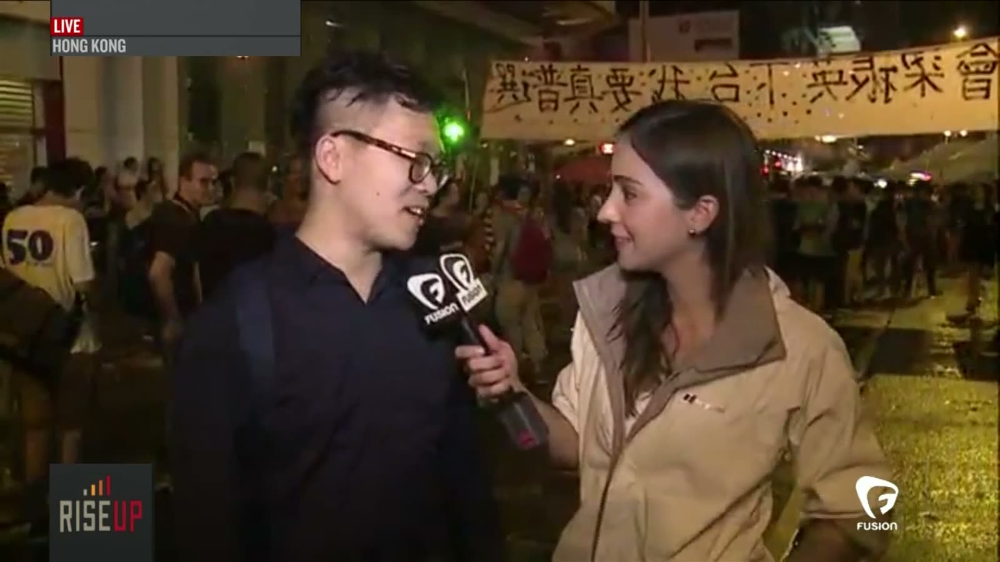
From the field feed · Hong Kong, 2014
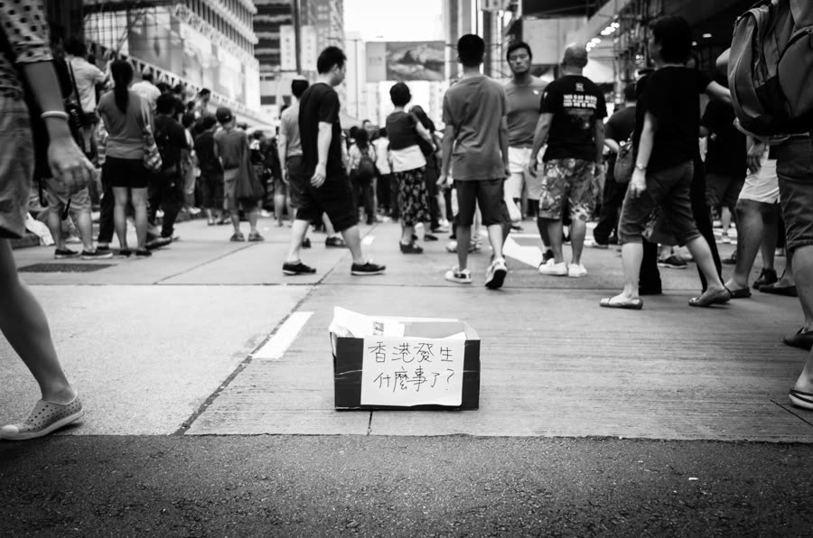
Mong Kok occupation, Oct 2014 · doctorho · CC BY-SA
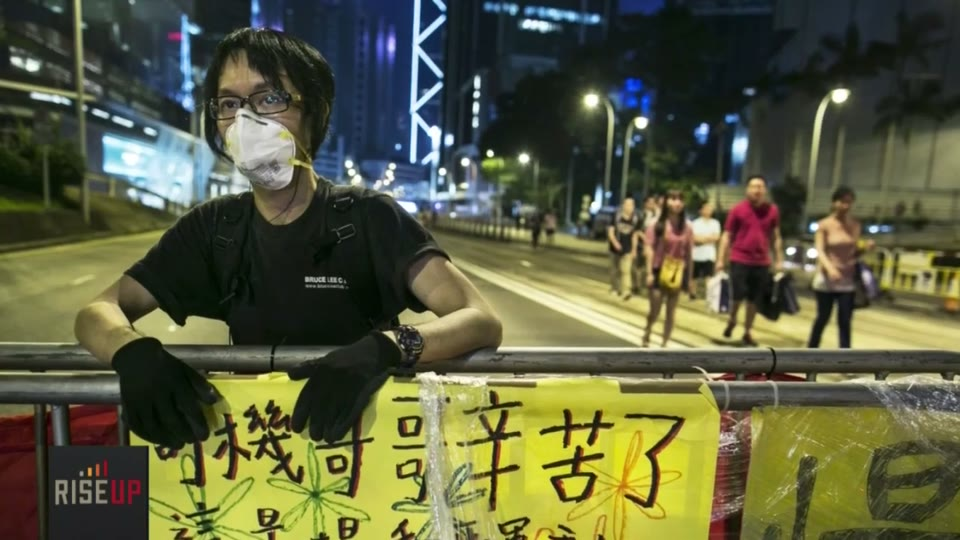
Holding the barricade line · from the coverage, Hong Kong 2014
The production problem was integration, not gear. I coordinated three competing broadcast organizations, Fusion, ABC News, and Univision, plus multiple live feeds and real-time social data, all at once, while the story kept changing on its way to air. Anchor Mariana Atencio confirmed it for viewers on the broadcast itself: "we're coming to you live from a backpack on the back of my producer."
"We're coming to you live from a backpack on the back of my producer."
That assignment compressed everything years of live news taught me. You can't fix a live broadcast in post. So you anticipate the failure modes before you go on, hold the narrative through-line while conditions shift, and deliver at production quality under whatever circumstances actually exist.
Producing Jorge Ramos under a $500 million lawsuit
From 2013 to 2015 I was a Senior Producer on "America With Jorge Ramos," Fusion's primetime flagship, the ABC News and Univision joint venture built to hold U.S. power to account from a Latino perspective. Ramos was already the most prominent Spanish-language anchor on American television. Partway through our run, Donald Trump filed a $500 million lawsuit against Univision, and Ramos's confrontation with him in Dubuque became one of the defining moments of the 2016 election cycle.
Running aggressive political coverage live, for a principal whose every question was a potential exhibit in ongoing litigation, turned editorial calls into risk calls. I ran daily story triage with senior producers and editorial leadership, flagged segments with litigation adjacency before they got booked, and structured rundowns so Ramos's signature move, the non-deferential question put to presidents and candidates, landed without blindsiding legal or standards. Every story also had to clear two sets of corporate interests, ABC's and Univision's, on top of our own editorial bar.
Every question was a potential exhibit. Coverage ran anyway.
Fusion's rollout ranked among the top-10 cable network launches in history, growing to nearly 40 million households by its second year per Adweek, and the show over-indexed among Hispanic and African-American audiences, all while sustaining that coverage inside a live lawsuit. The coverage ran. The organization never became the story.
Getting the Mayor of San Juan on record in the storm
In September 2017 I field-produced an interview with San Juan Mayor Carmen Yulín Cruz while Hurricane Maria was still active over Puerto Rico. Raw verité: no music, ambient disaster audio, an unscripted primary source. On camera, unprompted, she said, "At least somebody's listening on the other side of the ocean. Which is new. Which is new." She also confirmed on record that the island faced a four-month electrical blackout.
The clip hit 1.3 million views on a platform with a weekly audience north of 500 million. It ran at the peak of the national fight over the federal response. Cruz's advocacy during Maria became central to the congressional investigation into FEMA, and Puerto Rico's official death toll was later revised from 64 to 2,975. I won't claim our clip caused any of that. It put her voice on record while it mattered.
Get a primary source on record. Worst conditions. Then trust the story to do the work.
Crisis communication stays abstract until you're standing in it. The job that week was simple to say and hard to do: get a primary source on record under the worst conditions, keep the production honest enough that nothing gets between her and the audience, and trust the story to do the work.
As a Senior Producer at AJ+ in San Francisco, I got a deceptively simple brief: build a video that could break through. Breaking through meant something specific. The platform was Facebook. The window was the first three seconds. And the audience would scroll past anything that felt like a lecture. The piece I led, a two-minute explainer on the US measles outbreaks, hit 50 million views. What made it work wasn't creativity. It was engineering.
The opening frame · from the piece, AJ+ 2017
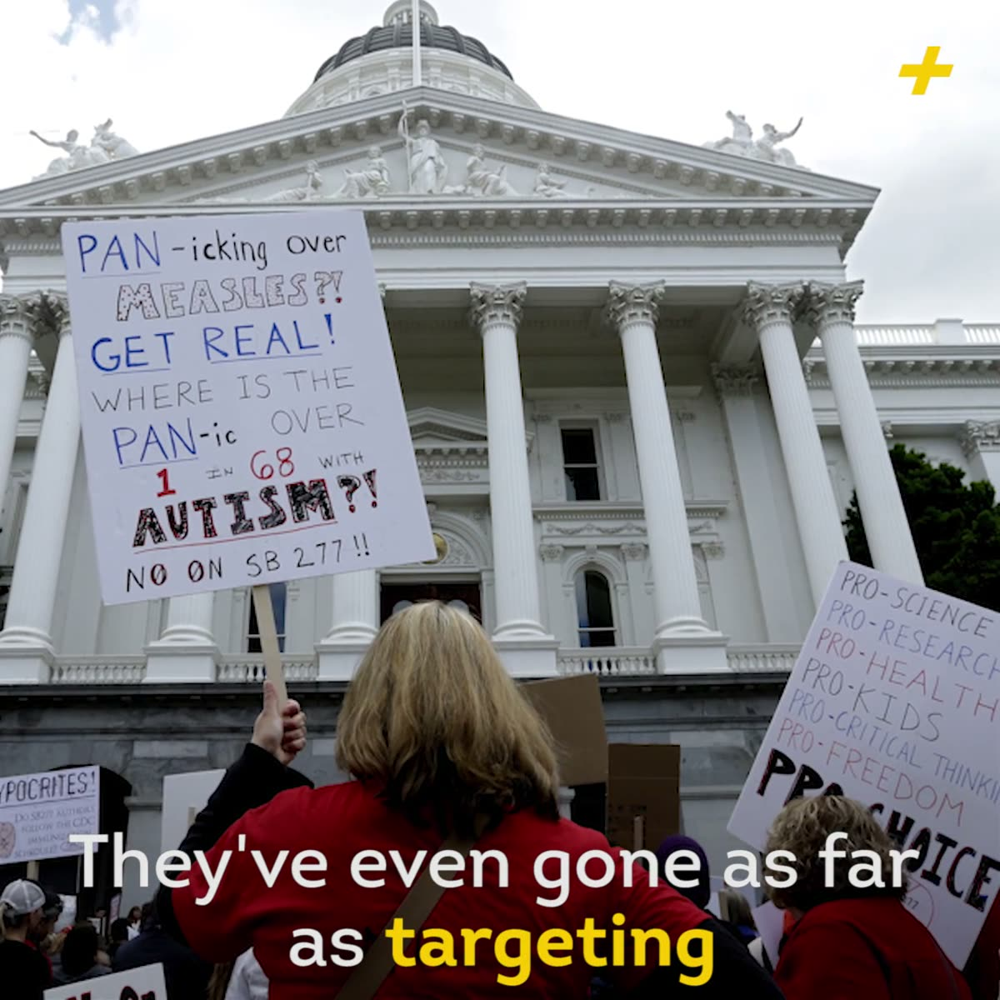
From the piece: anti-vaccine protesters at California's capitol
Three levers decided everything. The hook had to answer the viewer's unasked question, why should I stop scrolling, inside the first three seconds. The argument had to be legible at zero volume, because much of Facebook autoplay ran silent, so every cut and text line carried the logic without the audio. And the pacing had to match the platform's attention curve, not broadcast rhythm. Years at Al Jazeera English, HuffPost Live, and Fusion trained me to think in segments and rundowns. Social video had no rundown. It had a scroll.
This was a systems problem dressed in editorial clothing.
The video earned 50 million views and more than 40,000 comments on a piece of policy journalism cut for a two-minute window, at a network then ranked among the largest social news video publishers on Facebook. The deeper result was structural. The same-day explainer became a repeatable production line. And I coached producers from behind-camera roles into on-camera positions using it.
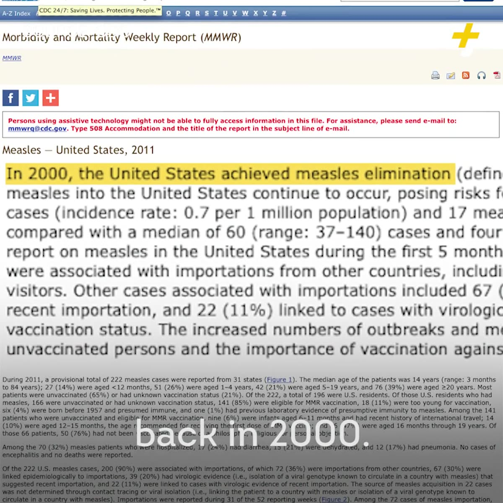
Mara Van Ells presenting, AJ+ newsroom, San Francisco · from the piece
Coaching producers from behind the camera to on air
AJ+ ran two parallel content lines when I joined as a Senior Producer: Context, which was deep, slow, and weekly, and Real Time, which was fast, shallow, and daily. Both worked. Neither caught breaking news with explanatory depth. Leadership asked me to design a third line that shipped explainer-quality context at real-time speed, and to use that format as an on-camera talent pipeline.
I coached Real Time producer Mara Van Ells from behind the camera into presenting the proof-of-concept piece, a same-day measles explainer that hit 50 million views on Facebook. Then I coached Yara Elmjouie into on-camera roles using the same format. Mara went on to win a Webby People's Voice Award in 2018. Yara hosted his own series and won a National Daytime Emmy and multiple Webbys. Alongside that, I contributed to Sana Saeed's on-camera development; she went on to host Backspace, AJ+'s media-critique series. The format became a permanent third production line.
The output you measure is the content. The output that compounds is the people.
The talent pipeline was designed in, not a happy accident. The brief had two goals from the start: a new format and new on-camera principals. I built the system to deliver both. That's how I think about every system since. The output you measure is the content. The output that compounds is the people.
Building the triage agent, then handing over the keys
The comms intake at Google Cross-Google Engineering was high volume and judgment-heavy: requests from senior engineers landing faster than a human first-pass could honestly serve. Most of that first pass didn't need a human. It needed classification, a competent revision, and a clear rule for when to escalate. So I built the agent that does exactly that. Solo, inside the tools the team already ran on.
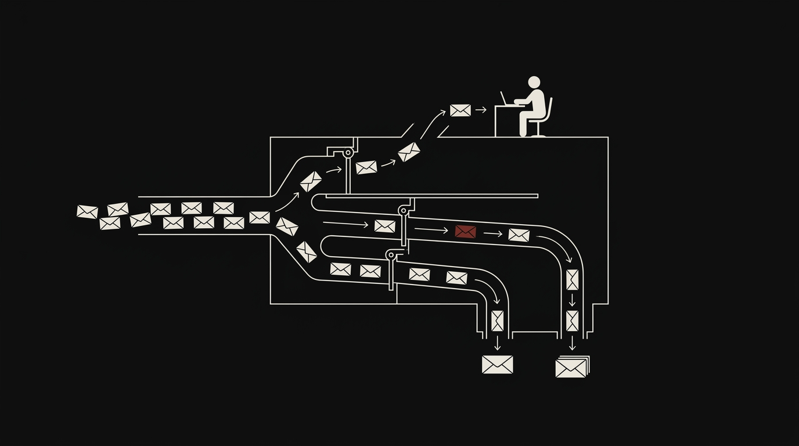
The triage pipeline · system illustration, generated
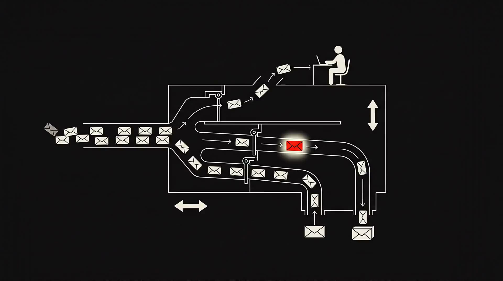
The system diagram · triage, revise, escalate
The architecture is deliberately conservative: three sequential prompts, triage then revise then escalate, with a confidence threshold that routes anything the model is unsure about to a human instead of letting it guess. It was built to auto-handle roughly 55 percent of inbound, and projected to recapture around 160 operational hours a year. Both were design targets I documented, not trophies I claimed.
The part I'm proudest of is the exit. I documented the system end to end and handed it off with a full operator runbook, so it belongs to the team, not to me. A sanitized public demo of the architecture lives on my GitHub.
I build systems that outlast me. That's the point.
What it proves: I build systems that survive my own departure, and I report their numbers the way an engineer would. Targets as targets.
Google xGE · 2024-2026
Teaching a system to write in an executive's voice
At Google Cross-Google Engineering I wrote for a vice president whose words landed on the company's most senior engineers, the Principal, Distinguished, and Fellow community, more than a thousand people. Executive writing at that altitude has a brutal quality bar and a slow failure mode: drafts bounce between writer and principal until the voice is right, and every round burns days. So I decided the voice itself was the system to build.
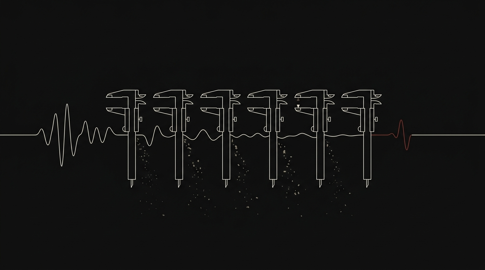
Voice as infrastructure · system illustration, generated
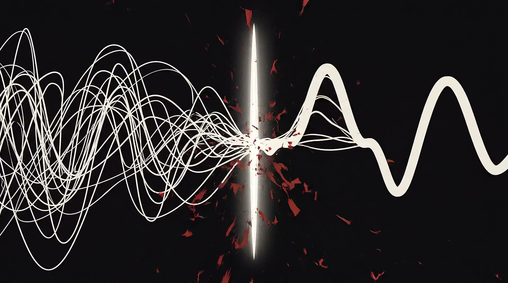
The system diagram · a voice encoded as checkable rules
I built it solo. It encodes the voice as rules a machine can check: scored stylistic axes, a codified constitution of what this voice does, and a banned-phrase list of what it refuses to do, learned from rejected drafts. Every generated draft had to clear those gates before a human saw it. Review back-and-forth with the VP dropped by about 70 percent, measured across the cycles we ran together.
I treat voice as infrastructure, not magic.
The method outlived the job. I rebuilt it in public as voice-os, an open-source pipeline that scores any draft against a target voice on six axes.
voice-os · six axes, one gate
axes rhetorical pace
risk tolerance
sentence rhythm
escalation pattern
hedging behavior
editorial register
gate pass · revise · reject
bar calibrated per context to percentiles
of what the author's own text scores
#FreeAhmed Coalition · 2026
Ten days: the #FreeAhmed coalition
In March 2026, the journalist Ahmed Shihab-Eldin, a former HuffPost Live host and one of the most recognized Arab-American broadcasters of the digital era, was detained in Kuwait on charges the international press-freedom community called politically motivated. I'd worked alongside Ahmed during my Al Jazeera years. By mid-April he'd been held more than fifty days without resolution. The Committee to Protect Journalists took his case public, and a coalition of his former colleagues formed around it.
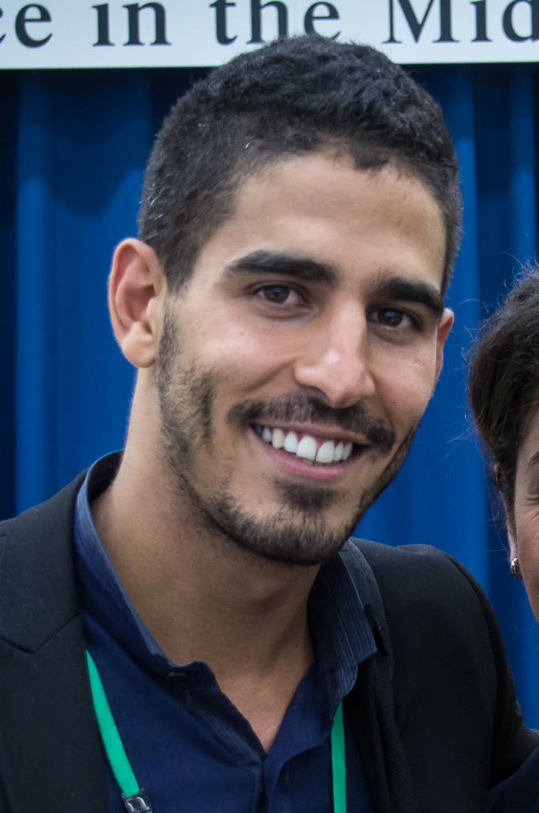
Ahmed Shihab-Eldin, 2014 · UN DPI / J. Gillespie · CC BY-SA
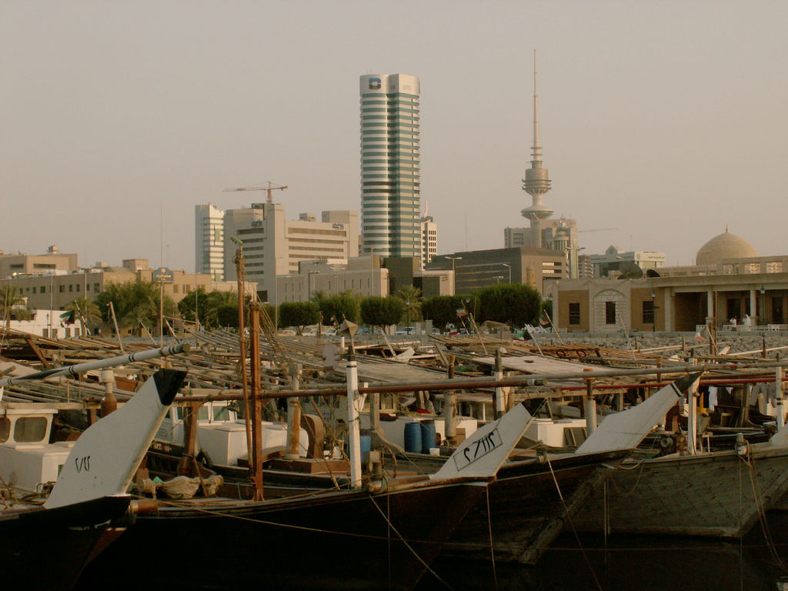
Kuwait City · boulanger.IE · CC BY
I joined that coalition, drawn largely from the former HuffPost Live and AJ+ producer networks, and helped push the #FreeAhmed campaign across US and international channels. The effort ran alongside CPJ, the International Federation of Journalists, Amnesty International, and Ahmed's international legal team. A detention case carries real risk for the person at its center, so the work demanded discretion: knowing what to say publicly, what to keep contained, and never becoming a vector for more harm. I won't detail the mechanics here. Deliberately.
The coalition, aligned
Committee to Protect JournalistsInternational Federation of JournalistsAmnesty InternationalHis international legal teamThe HuffPost Live + AJ+ producer network
Ahmed was acquitted on the central charge and released in late April 2026, ten days after CPJ went public. I won't claim the coalition alone produced that outcome. But the pressure campaign was coordinated, international, and clean: nothing surfaced that could compromise him or the people working to free him.
The highest-stakes communication work is often deciding what not to say.
The lesson: a professional network is infrastructure if you maintain it, and the highest-stakes communication work is often deciding what not to say.
Independent build · 2026
From newsrooms to a fleet of fifty agents
After sixteen years in newsrooms and communications, I turned the production instinct on my own job search. I forked an open-source project called career-ops, which was a scaffold, and extended it into a production pipeline: my personal writing corpus wired into every generated output, zero-token portal scanning that reads Greenhouse, Ashby, and Lever APIs directly and filters listings before a single token is spent, and parallel workers under a single orchestrator.
The fleet · system illustration, generated
The fleet diagram · one orchestrator, fifty agents
launchctl · the fleet, live
$ launchctl list | grep career-ops | wc -l
51
$ launchctl list | grep career-ops | head -8
...career-ops.batch
...career-ops.bug-resolver
...career-ops.builder-log
...career-ops.audit
...career-ops.background-sweep-daily
...career-ops.alignment-watcher
...career-ops.buttons-smoke
...career-ops.batch-midday
It grew into a fleet of roughly fifty scheduled agents running unattended on launchd: scanning portals, triaging postings, batch-evaluating roles, rebuilding a live dashboard, and reporting dead-man heartbeats so silence never masquerades as health. Production deployment went live in April 2026, and the repo is public. Running it taught me that the hard problem isn't generation quality. It's coherence at scale, catching outputs that silently drift from the source.
Unclear thinking ships faster and breaks harder. So I draw the boundaries first.
The clearest lesson: tooling doesn't protect you from architectural confusion. It removes friction from execution, which means unclear thinking ships faster and breaks harder. So I draw the stage boundaries before I build, and I decide what should be automated out of human attention entirely versus what requires judgment and must be protected from automation.